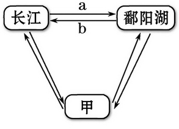
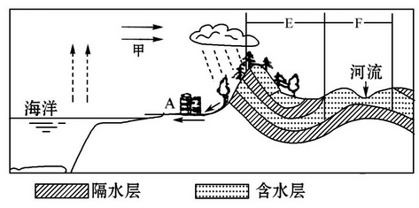
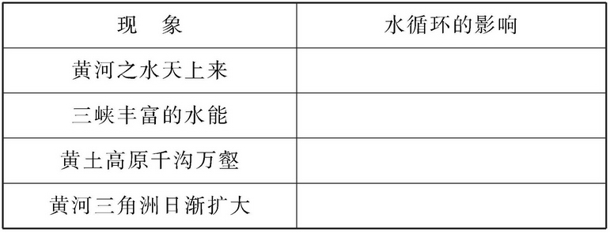
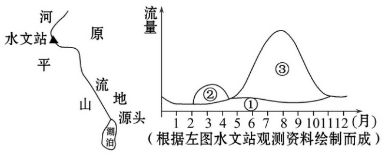
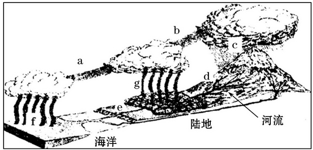
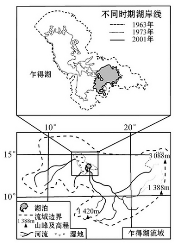

None - Fade - Slide - Convex - Concave - Zoom
选择班级
幻灯片样式
Black (default) -
White -
League -
Sky -
Beige -
Simple
Serif -
Blood -
Night -
Moon -
Solarized
1.地球上各种水体储量所占的比重，由大到小的排列顺序为
A.海洋水、冰川水、地下水、湖泊水
B.海洋水、河流水、冰川水、地下水
C.海洋水、河流水、湖泊水、大气水
D.大气水、土壤水、沼泽水、生物水
读下图三种陆地水体相互转化关系示意图，完成2、3题。
2．甲代表的水体是( )
A.雨水 B.冰川融水
C.海洋水 D.地下水
3．箭头a代表的现象一般发生在( )
A.1、2月
B.3、4月
C.6、7月
D.10、11月
“一滴水可以汇入大海的波涛，可以化为高山的彩虹，可以变为地面的积雪。”结合所学知识，完成4、5题。
4.这句话直接涉及了水循环的哪些环节( ) ①径流 ②蒸发 ③降水 ④水汽输送
A.②③④
B.①③④
C.①②④
D.①②③
5.这段话说明水循环联系的圈层有( ) ①水圈 ②岩石圈 ③大气圈 ④软流层
A.②③④
B.①③④
C.①②④
D.①②③
6.(2011·北京高一检测)2011年2月底北京地区普降中雪，是11年来最早降雪。如果此次降雪是实施人工增雪的结果，直接干预的是水循环中的( )
A.地下径流
B.下渗
C.地表径流
D.降水
7.下图是某地地形剖面示意图。读图完成下列问题。
(1)图中甲处水循环类型是[海陆间循环]。
(2)如果该地区植被遭到破坏，可能会对该地区的水循环造成什么影响?
使该地降水减少，地表水下渗减少。
(3)如果A处城市过量开采地下水，可能会对当地环境产生的影响是。
导致地下水水位下降或枯竭；沿海地带海水入侵，使地下水水质变坏；地面沉降或塌陷；工业污水、生活废水下渗污染地下水(至少答出三点)
8.水循环是地球上最活跃的能量交换和物质转移过程之一，是自然界最富动力作用的循环运动，深刻而广泛地影响着全球的地理环境。结合所学知识，探究以下地理现象所反映的水循环的地理意义。
读我国东北地区某河流流量补给示意图，完成1、2题。
1.图中数码表示雨水补给和季节性融雪补给类型的分别是
A. ①②
B.②③
C.③②
D.③①
2.与淮河相比，该河流水文特征是( )
A.水位季节变化小
B.泥沙含量大
C.有明显的春汛和夏汛
D.冬季封冻断流
读水循环示意图，回答3、4题。
3．能正确反映陆地内循环的是( )
A．g→b→c→d
B．a→b→c→d
C．f→a→c→e
D．g→e→f→a
读我国东北地区某河流流量补给示意图，完成1、2题。
4．有关水循环地理意义的叙述，不正确的是( )
A．使陆地水资源得到不断更新
B．维持全球水的动态平衡
C．不断塑造着地表形态
D．加剧不同纬度热量收支不平衡的矛盾
(2010·北京文综)下图是非洲乍得湖流域图。读图，回答5、6题。
5．乍得湖流域( )
A．河流径流量的季节变化小
B．河水主要来源于冰雪融水
C．地表径流参与海陆间水循环
D．水面蒸发参与陆地内水循环
6．根据图中信息可以判断( )
A．流域面积缩小
B．湖泊水位总体下降
C．流域主体位于热带荒漠
D．1963年时湖底东南高，西北低